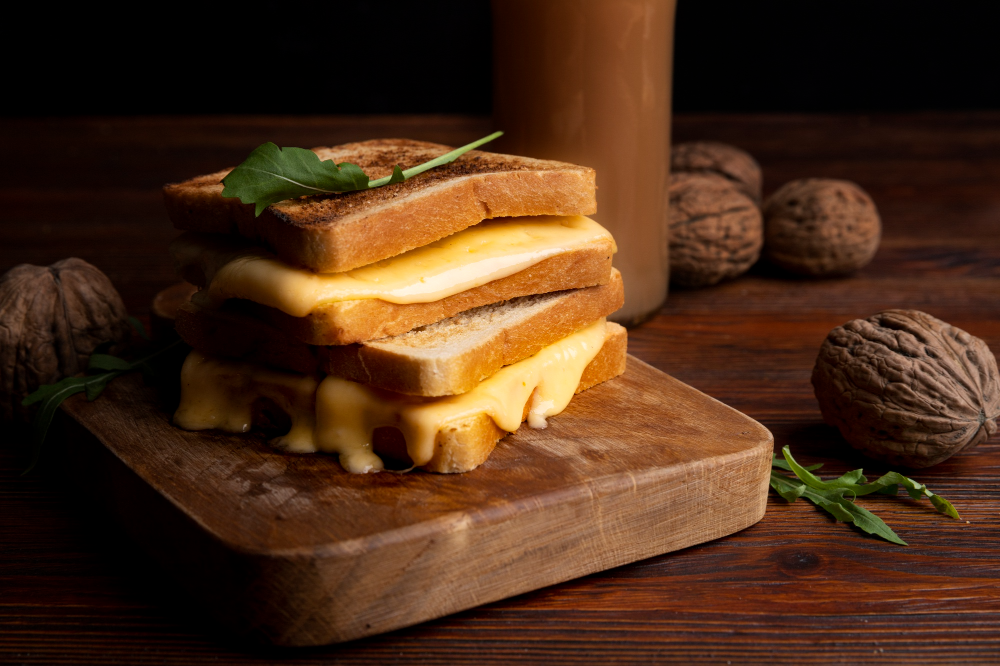

Cheese Toast Recipe

Ingredients
- Toast
- Butter
- Shredded cheddar cheese
- Mayonnaise
Steps
- Preheat the oven to 375°F. Line a sheet tray with parchment paper. Place the slices of bread on the prepared sheet tray. Spread ½ Tablespoon of the butter on the top of each piece of bread.
- In a medium bowl, stir together the shredded cheddar and mayonnaise until the cheese shreds are coated. Spread the cheese mixture evenly on top of each piece of bread. This is a little tricky, I used my hands to spread it out as evenly as possible.
- Bake for 8-10 minutes until the cheese is melted and bubbly and the bread is toasted.
- Serve Immediately
Main Menu